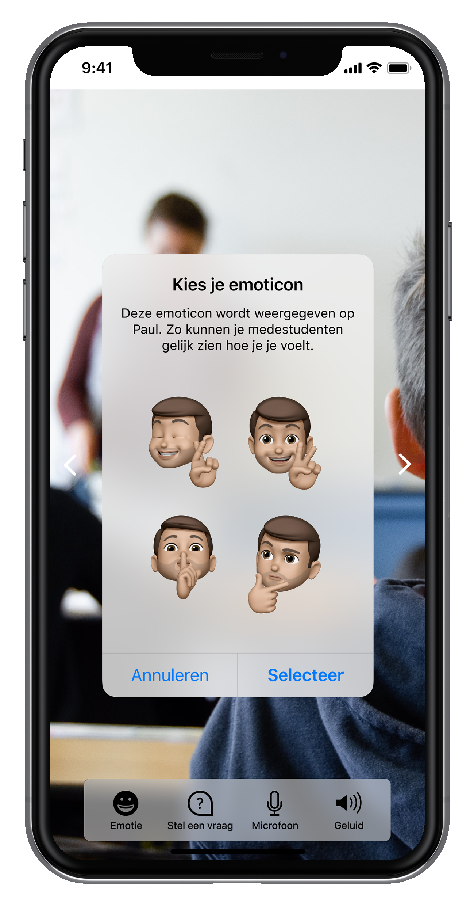
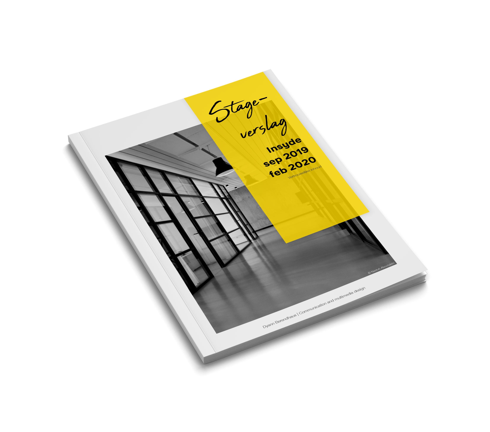

Hey daar! Ik ben Dyann 🙋🏼♀️
Een van nature nieuwsgierig persoon, gepassioneerd door user experience (UX) onderzoek.
Wat ik heb geschreven
How we put the 'Easy' in Easy LMS
Client interviews: our tool to understand what you need
Wat ik graag doe
🕵🏼♀️
Kwalitatief onderzoek
Hiermee kan ik diepgaand inzicht krijgen in de houding, het gedrag en de ervaringen van gebruikers. Door technieken als interviews, gebruikerstests en observatiestudies te gebruiken, kan ik gedetailleerde informatie verzamelen die het ontwerpproces kan sturen. Dit helpt de context te begrijpen, evenals de motivaties, voorkeuren en pijnpunten van een gebruiker. Door de kracht van kwalitatief onderzoek te benutten, kan ik u helpen producten en diensten te creëren die meer gericht zijn op de gebruiker en beter voldoen aan de behoeften van de gebruikers.
⚔️
Kruiscontrole
Maakt een completer beeld mogelijk van de ervaringen, gedragingen en attitudes van gebruikers. Door kwalitatieve en kwantitatieve gegevens te combineren, zoals database-informatie of analytics, ontstaat een beter begrip van de gebruiker en zijn taken. Dit leidt tot effectievere oplossingen. Kwantitatieve gegevens kunnen een bredere context bieden voor de kwalitatieve bevindingen en helpen deze te valideren of te weerleggen.
📊
Resultaten analyseren
Geeft me energie omdat het me in staat stelt waardevolle inzichten te ontdekken die het ontwerp en de ontwikkeling van producten en diensten kunnen ondersteunen. Vooral als ik waardevolle patronen, thema's en trends in de gegevens kan ontdekken, waardoor ik een dieper inzicht krijg in de behoeften, motivaties en pijnpunten van gebruikers. waardoor je effectievere en gebruikersgerichte oplossingen kunt ontwikkelen. Daarnaast kan het extra spannend zijn als er onverwachte inzichten worden ontdekt die leiden tot nieuwe innovaties en verbeteringen.
Wat oude schoolprojecten
Paul
Hoe kunnen langdurig zieke studenten verbondenheid voelen met de klas door middel van een robot?
Stage Easy LMS
Hoe kan Easy LMS potentiële klanten voorzien van een leerzaam en gemakkelijk onboardingsproces?